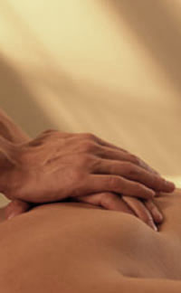
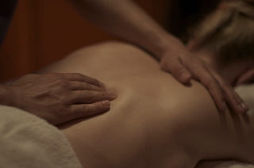

Copy by Carlos Oronoz
Site by Blanca Tortajada

This work is licensed under a Creative Commons NC-SA 3.0 License.
Petrissage or kneading is used on deeper tissues for mobilising fluids, stretching muscle fibres, and inducing relaxation. Some of these techniques are specifically aimed at only deeper tissue and are therefore both ineffective and difficult to perform on narrow parts of the limbs. You must therefore pay particular attention, as with all massage techniques, as to what your purpose is when kneading petrissage is a powerful technique that is particularly effective in mobilising fluids in very deep muscles and applying a good stretch to the fibres involved.
Frictions may be used for exploratory purposes, or for deeper and sometimes more painful movements aimed at breaking down lesions, separating muscle fibres, and even breaking down recent scar tissue. When performing frictions for exploratory purposes we tend to use the sensory pad of the thumb to “grasp” the skin and to move this over the underlying surface to feel for any abnormalities (trigger points) to the tissue concerned. This allows us to palpate, particularly around joints and feel for smaller abnormalities in the tissues. When performing frictions for the purpose of separating muscle fibres, breaking down lesions and scar tissues, firstly the client must be warned that these procedures may indeed be painful or at the very least uncomfortable. They only need to be carried out for a very short while. Using vigorous frictions for any longer than this may have a particularly detrimental effect by irritating and even causing inflammation.
The simplest and most natural of all massage strokes, Effleurage is perfect for openers. You simply glide your hands across the body, using flat hands on the back and cupped hands on the legs and arms. The rhythmic stroking movement not only relaxes the person receiving the massage and lets him or her get used to the massager’s hands, but readies the body for deeper work.
In Circular Knuckling, often used on the upper chest and shoulders, you press your knuckles into the muscles and use a rotating motion to ease tightness and tension. Straight Knuckling, in which your knuckles are kept in a line (like in a loose fist) and worked smoothly along the muscles, works well on the buttocks and thighs.
A mainstay of Swedish massage, Tapotement refers to a number of percussive movements. In Pummeling, you pound the fleshy areas of the body (buttocks and thighs) with the sides of your loose fists, dispersing tension and stimulating blood flow. Similar to this is Hacking, where you use the edges of your flattened hands in a light karate-chop motion. Keep your hands loose and your wrists relaxed and maintain a slow rhythmic pace. These strokes can be effective on muscles that a strained or cramped.
This involves shaking the muscles rapidly, using flattened hands or fingers. Use this stroke sparingly to promote circulation.
Concentrating on specific problem areas, using techniques to work on the deeper layers of muscle, releasing the build up of tension. For back, neck and shoulder pain or muscular aches.
£60 / 60 minutes
£90 / 90 minutes
A brisk deep tissue massage, perfect for the sports enthusiast, to stretch and tone muscles and increase circulation. Suitable for both pre and post sports activity.
£60 / 60 minutes
£90 / 90 minutes
Spend time unwinding with a soothing massage, using light and medium massage pressures to gently take away your stresses and strains of everyday living.
£60 / 60 minutes
£90 / 90 minutes
Deep and relaxing treatment for relief from stress and muscular tension to back, neck and shoulders.
£30 / 30 minutes
Copy by Carlos Oronoz
Site by Blanca Tortajada
This work is licensed under a Creative Commons NC-SA 3.0 License.